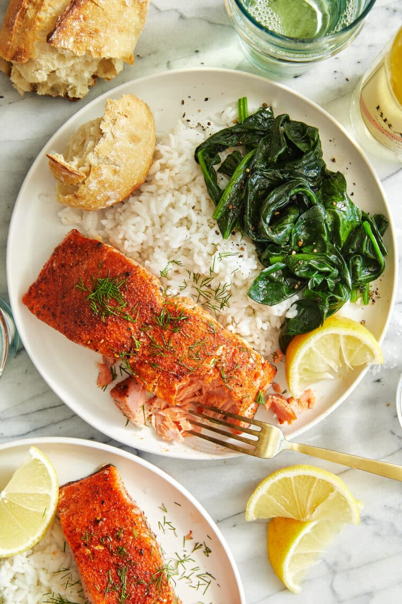

Baked Salmon

Description
With a simple and oh-so-flavorful spice rub, this comes together so fast in just 30 min!
Quick, healthy and so easy!
Ingredients
- 1 teaspoon sweet paprika
- ½ teaspoon garlic powder
- Kosher Salt
- 1.5 tablespoons of olive oil
- 4 salmon fillets
- 1 tablespoon of chopped fresh dill
- 1 lemon, cut into wedges
Steps
- Preheat oven to 450 degrees F.
Line a baking sheet with parchment paper.
- In a small bowl, combine paprika, garlic powder,
1 teaspoon salt and 1/2 teaspoon pepper.
- Using paper towels, pat salmon dry. Drizzle with
olive oil; season with paprika mixture, gently pressing
to adhere.
- Place salmon onto the prepared baking sheet, skin side down.
Place into oven and bake until the fish flakes easily with a
fork, about 10-12 minutes. Sprinkle with dill.
- Serve immediately with lemon.